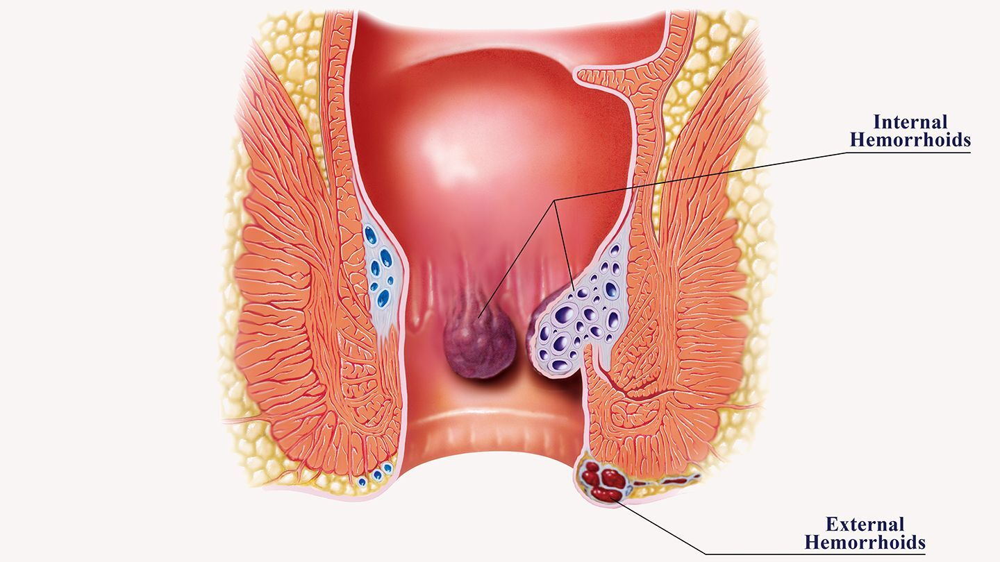

अरिनी कुसुमंदानी का ब्लॉग
सर्जरी आपकी समस्या का समाधान नहीं करती! मैं आपको बताऊंगा कि कैसे मैंने केवल 10 दिनों में बवासीर से मुकाबला किया।
को 15:19 पर प्रकाशित | लेखिका: अरिनी कुसुमंदानी
नमस्ते! मैं अरिणी कुसुमंदानी हूं। आज मैं आपको बताना चाहता हूं कि मैं बवासीर से कैसे पीड़ित हुआ और बिना सर्जरी के कैसे ठीक हो गया!
मुझे पहली बार बवासीर तब हुई जब मैं 40 साल का था। मैं एक कार्यालय में काम करता हूँ. हमेशा बैठने की स्थिति में काम करने की दिनचर्या के साथ, एक बड़ा जोखिम है कि मुझे बवासीर हो जाएगी (मैंने लगभग 70% पढ़ा है)। जब गुदा क्षेत्र में खुजली होती है तो मैं काफी देर तक इस पर ध्यान नहीं देता। खुजली बहुत गंभीर नहीं है, यह सामान्य है। तो मैं इसे पकड़ता हूं. 2-3 महीनों के बाद भी खुजली दूर नहीं हुई और मुझे लगा कि यह कीड़े या अन्य परजीवियों के कारण हो सकता है। मैंने इन परजीवियों के लिए एक विशेष गोली खरीदी, पीया और पता चला कि कुछ भी नहीं बदला। मुझे याद है, मल त्याग के बाद खुजली चरम पर होती थी और अगर इसे पानी से न धोया जाए बल्कि केवल टिशू से पोंछा जाए, तो खुजली बहुत कष्टदायक हो जाती है। इसलिए, मैं अपने तरीके का उपयोग करता हूं: शौचालय से काम खत्म करने के बाद, मैं जल्दी से शॉवर में जाता हूं। पहले, यह मेरे लिए नया था। लेकिन आख़िरकार, खुजली किसी भी समय प्रकट हो सकती है। इससे भी बुरी बात यह है कि जब मैं कार्यालय में या सार्वजनिक स्थानों पर होता हूं तो मैं इसे खुजलाना चाहता हूं। ऐसे समय में, मैं बस घर जाकर ठंडे पानी से स्नान करना चाहता हूं। मैं इसे नज़रअंदाज करने की कोशिश करता हूं और सोचता हूं कि यह बस थोड़ी सी खुजली है। तो क्या हुआ?
कहानी जारी है. 4 महीने के बाद मल त्याग के दौरान खूनी स्राव होता है। चलने-फिरने और अधिक देर तक बैठने पर दर्द होता है। फिर मैं दर्द निवारक दवाएँ खरीदने के लिए फार्मेसी गया। इस तरह मैं दर्द और खुजली से त्रस्त हो गया। लक्षण गंभीर हैं. इसके अलावा दर्द और खुजली भी असहनीय होती है। प्रत्येक बदली हुई मूल स्थिति में लगातार दर्द और खुजली होती रहती है। मैं अब काम पर नहीं जा सकता था, मैं केवल रो सकता था। सौभाग्य से, मेरा काम घर से किया जा सकता है। मैंने इंटरनेट पर इस लक्षण के बारे में
बेशक, पहली बार में, मैंने अपनी उम्र में इस तरह की स्थिति को स्वीकार नहीं किया। क्या आप कल्पना कर सकते हैं, मैं केवल 40 वर्ष का हूं और मुझे बवासीर है? मैं इस उम्र में जोखिमों को समझता हूं, लेकिन मुझे यह भी उम्मीद है कि मुझे यह बीमारी कभी नहीं होगी। मैं खूब व्यायाम करता हूं. एक पेशेवर की तरह नहीं, लेकिन फिर भी... मैं केवल पार्टियों में पीता हूं, मैं पौष्टिक भोजन खाता हूं (कभी-कभी मैं जंक फूड खाता हूं लेकिन केवल सप्ताहांत पर, हमेशा ऐसा नहीं होता है)। तो, 40 वर्ष की आयु में बवासीर वास्तविक है।
उस समय, मैंने सबसे पहले प्रोक्टोलॉजिस्ट (कोलोरेक्टल सर्जन) के पास जाना था। डॉक्टर ने मुझे बताया कि मुझे स्टेज 1-2 बवासीर है। मैंने इंटरनेट पर जो पढ़ा, उसके अनुसार मेरी बवासीर पहले से ही चरण 4 में है! फिर डॉक्टर ने एक मरहम लगाया और कहा कि दो सप्ताह में मैं ठीक हो जाऊंगा। तब से, मेरी गुदा के नीचे जाने के अलावा, बाहर अभी भी दो और उभार हैं। शौच करने से ऐसा महसूस होता है मानो हर जगह यातना दी जा रही हो। मैं मौजूदा उपचारों की सलाह का पालन करता हूं, बेशक मैं सभी दवाएं खरीदता हूं। हाँ, केवल दो सप्ताह में दर्द दूर नहीं हुआ, बल्कि और बढ़ गया!
दूसरी बार, मैं दूसरे क्लिनिक में गया। वहां डॉक्टर का तो और भी बुरा हाल है! उन्होंने निदान का खुलासा नहीं किया, केवल इतना कहा कि सर्जरी के अलावा कोई दूसरा रास्ता नहीं था। ऑपरेशन की लागत ही 1,000 अमेरिकी डॉलर है! मैं उस तरह का पैसा तुरंत खर्च नहीं कर सका, लेकिन फिर भी मैं डेढ़ महीने तक इकट्ठा करने में कामयाब रहा। ऑपरेशन दो महीने बाद के लिए निर्धारित किया गया था। मुझे कड़ी मेहनत करनी है।
तब जो बात मन में आई वह मेरी सहेली के पति के बारे में थी, जिन्हें लगभग आधे साल पहले इसी तरह की बीमारी हुई थी। मैंने अपने दोस्त को फोन किया. मैं उसकी उपचार प्रक्रिया के बारे में जानना चाहता हूं और वह अब कैसा है। उसने फ़ोन पर मेरे प्रश्नों का उत्तर नहीं दिया, फिर हम मेरे घर पर मिलने के लिए सहमत हुए।
अगले दिन मैंने उसके लिए दरवाज़ा खोला, मैंने देखा कि वह पहले से ही रो रही थी! चौंक पड़ा मैं।
- - "क्या हुआ?"
- - "मेरे पति... अभी गुजर गए! एक सप्ताह पहले। मुझे स्तन कैंसर हो गया है!" वह मेरे घर की रसोई में रोई।
- - "कैसे? उसके जैसा जवान आदमी?"
- - "यही बात है! सर्जरी के बाद पुनरावृत्ति, बवासीर फिर से आ गई और साथ ही जटिलताएँ भी हुईं। तीन सप्ताह पहले, हमें पता चला कि कैंसर फैलना शुरू हो गया था और एक सप्ताह पहले यह....सबकुछ..."
- मैं पूरी तरह से हतप्रभ था. मैंने पूछा कि उनका इलाज कैसे किया गया, उनके लक्षण क्या थे। उन्होंने सब कुछ समझाया. उसने वही दवा का नाम बताया जो मैंने इस्तेमाल किया था। वह अपने पति का इलाज नहीं कर सकी! उनका ऑपरेशन किया गया. एक महीने बाद, रोग जटिलताओं के साथ फिर से उभर आया।
मैं वास्तव में सर्जरी नहीं कराना चाहता था, लेकिन अब मुझे डॉक्टरों से भी डर लगता है। आप कुछ भी नहीं जानते हैं और फिर तरह-तरह के नुस्खे लिख दिए हैं जो बीमारी को और बदतर बना देते हैं। जबकि देरी करना भी कोई विकल्प नहीं है - जितना अधिक, उतना बुरा। मैं अब सामान्य रूप से नहीं चल सकता, और मैं सामान्य रूप से चल भी नहीं सकता। हर मिनट हर चीज़ में दर्द और खुजली होती है। हाँ, और रक्त बहता रहता है। खून कैंसर का लक्षण है.
मैं घबराने लगा.
मैं अब सदन से बाहर नहीं जाता. मेरे हाथ काँप रहे थे और मैं लगातार बुरी चीजों के बारे में सोच रहा था। मैं अब और काम नहीं कर सकता. यदि आप हर समय बीमार महसूस करते हैं और केवल मौत के आने का इंतजार कर सकते हैं तो आप किस तरह का काम कर सकते हैं?! मैं पुनर्विचार करने की कोशिश कर रहा हूं, कम से कम लोक उपचार या कुछ और ढूंढने की।
सर्जरी के समय मनोदशा, बाद में पुनरावृत्ति का 50% जोखिम
मैंने इंटरनेट पर खोज की. तभी मुझे एक मंच पर एक महिला का संदेश मिला, उसने मुझे बताया कि वह बवासीर से कैसे उबरी। वह बिना सर्जरी, बिना इंजेक्शन दिए और बिना मरहम लगाए ठीक हो गए। बस एक गोली ले लो! वह कहते हैं, लेकिन यह दवा बहुत शक्तिशाली है। मैंने इसे आज़माने का फैसला किया। कीमत वाजिब है और प्राकृतिक सामग्री से बनी है। यदि आप गिनती करें, तो अब तक मैंने विभिन्न दवाओं के लिए सैकड़ों हजारों खर्च किए हैं। कुछ सौ डॉलर और कोई समस्या नहीं होगी।
मैंने उसे फोन किया और पूछा कि उसने इसे कहां से खरीदा है। यह पता चला है कि विनिर्माण प्रक्रिया की कठिनाई के कारण इस दवा का उत्पादन कम मात्रा में किया जाता है। यह दवा केवल निर्माता की आधिकारिक वेबसाइट पर ही बेची जाती है, यह हमेशा वहां भी नहीं बेची जाती है। लेकिन मैं भाग्यशाली था. जब दवा बिक्री के लिए उपलब्ध होती है तो मैं ऑर्डर देता हूं।
सच कहूँ तो, मुझे वास्तव में किसी चमत्कारिक इलाज की आशा नहीं थी। मैं बस ऑपरेशन को कुछ देर के लिए टालना चाहता हूं. यह बहुत डरावना था, मेरे हाथ काँप रहे थे!
लेकिन जब मैंने पहली बार दवा ली, तो खुजली गायब हो गई और मैं सामान्य रूप से चल-फिर सका क्योंकि अब मुझे खुजली महसूस नहीं होती थी। मुझे लगता है यही तरीका है. फिर मैं दिन में दो से तीन बार दवा पीता हूं। परिणाम क्या हुआ?
पित्ती तुरंत गायब हो जाती है।
- दो दिन के बाद बाहर आने वाली गुदा गांठ सिकुड़ने लगती है।
- पांच दिनों के बाद, गुदा गांठ अपने आप ठीक नहीं होती।
- 10 दिनों के बाद, मैं हमेशा की तरह शौच करने में सक्षम हो गया, कोई दर्द नहीं हुआ।
- उपचार के तीसरे सप्ताह में रक्त बहना पूरी तरह बंद हो जाता है। मलत्याग के दौरान भी गुदा का बाहरी हिस्सा दोबारा नीचे नहीं उतरता। मुझे लगता है कि अंदर की समस्या का समाधान हो गया है. लेकिन पुनरावृत्ति से बचने के लिए, मैंने एक महीने तक उपचार का कोर्स पूरा किया।
क्लिनिक में, डॉक्टर ने परीक्षा के परिणाम बताए: बवासीर पूरी तरह से ठीक हो गया है! इससे भी अधिक, वहां मौजूद अच्छे बैक्टीरिया को नुकसान पहुंचाए बिना। इसका मतलब है, सब कुछ पहले ही हो चुका है, बिना किसी दुष्प्रभाव के। ऑपरेशन तुरंत रद्द कर दिया गया. कोई भी शब्द यह व्यक्त नहीं कर सकता कि मैं कितना खुश था! मुझे जबरदस्त राहत महसूस हुई. जो लोग पहले ही बवासीर से उबर चुके हैं वे निश्चित रूप से मुझे समझ सकते हैं))
- मैं सर्जरी से बच सकता हूँ! मैं पुनरावृत्ति और कैंसर से बचने में सक्षम था! मैं असहनीय दर्द से उबर रहा हूँ!
- अब जबकि उस घटना को पाँच साल हो गए हैं, मैं बहुत खुश हूँ! मैं सामान्य रूप से चल सकता हूँ, दौड़ भी सकता हूँ!
- काश मुझे इस दवा के बारे में पहले पता होता!
धन्यवाद Hemwellx, अब मैं स्वस्थ हूं और एक सार्थक जीवन जी रहा हूं। बवासीर हमेशा के लिए ख़त्म हो गई!

दवाइयां ऐसी दिखती हैं
तो अगर, आपकी भी यही समस्या है, तो तुरंत इसका इलाज करें! यह कोई मज़ाक नहीं है। मैं और मेरी सहेली के पति इसका ज्वलंत उदाहरण हैं। मुझे बहुत खुशी है कि मैं सर्जरी और बीमारी के दोबारा होने से बचने में सफल रही और जल्द ही ठीक भी हो गई! मुझे उम्मीद है कि आप भी! यदि आप उस दवा के बारे में जानना चाहते हैं जिसने मुझे ठीक किया, तो इसका नाम बवासीर के लिए Hemwellx है। नीचे, दवा निर्माता आपके डेटा को भरने के लिए एक फॉर्म संलग्न करता है, ताकि आप छूट पर उत्पाद प्राप्त कर सकें।
मैं आपकी सफलता की कामना करता हूं और सबसे महत्वपूर्ण बात यह कि आप हमेशा स्वस्थ रहें! जल्द ही फिर मिलेंगे!
अरिणी कुसुमंदानी की ओर से नमस्कार
बधाई हो!
आप 50% छूट के साथ दवा ले सकते हैं
इससे पहले कि यह ख़त्म हो जाए, इस उत्पाद को रियायती मूल्य पर ऑर्डर करें!
छूट निम्नलिखित तिथियों के बाद समाप्त हो जाएगी:
00:00
प्रतिदिन केवल 250 बोतलें ही भेजी जाएंगी
याद रखें, यह 50% छूट प्रोमो बहुत सीमित है
इन्दः सरवती
बहुत बहुत धन्यवाद, बहुत उपयोगी जानकारी. मैं अपने पति के लिए Hemwell ऑर्डर करूंगी, वह एक साल से इस दर्द से पीड़ित हैं!!!)
सुरभि सिंह
बहुत उपयोगी उत्पाद, मैंने अभी उपयोग किया!! मुझे अभी-अभी यह देखने को मिला और आपकी सलाह के कारण मैंने तुरंत Hemwellx का ऑर्डर दे दिया, हालाँकि यह केवल उपयोग की शुरुआत थी। इसे धोना बहुत आसान हो जाएगा!
लीलावती
जैसा कि आप जानते हैं, मैं वर्षों से इससे पीड़ित हूं। जब मैंने बच्चे को जन्म दिया तो ऐसा लगा जैसे कुछ बाहर आ रहा हो। मैं एक बार तो भयभीत हो गया था. इसलिए मैंने भी यह दवा ऑर्डर की क्योंकि मेरी मां ने इसकी सिफारिश की थी। सचमुच मदद करता है.
रानी कपूर
कल मैंने बच्चे को जन्म दिया और मुझे यह आश्चर्य हुआ ((सलाह के लिए धन्यवाद, मैंने पहले ही Hemwellx का ऑर्डर दे दिया है। मैं इसका उपयोग करूंगी। निश्चित रूप से ठीक हो सकती हूं)
फातिमा शेख
हाँ। मैंने इसे पढ़ा है, इसलिए यह बवासीर के चरण 4 की तरह है...
करिश्मा राणा
अधिकांश लोगों के लिए एक संवेदनशील चर्चा, भले ही वे आमतौर पर नहीं बताएंगे, जैसे कि यह समस्या मौजूद ही नहीं है। आख़िरकार, मेरा कोई भी दोस्त मुझे संघर्ष और दर्द सहने के अपने अनुभवों के बारे में नहीं बताना चाहता था। हमारे रिश्तेदार लंबे समय से बीमार थे, जब तक कि उन्हें स्टेज 1 कैंसर का पता नहीं चला, उन्हें ऑपरेशन करना पड़ा, आंतों और पेट के कुछ अंगों को काटना पड़ा... और ऑपरेशन विपरीत, भयानक निकला।
प्रीती राठौर
हाल ही में मुझे एहसास हुआ कि मुझे पांच साल या उससे भी अधिक समय से बवासीर है, लेकिन मुझे नहीं लगता कि कोई समस्या है। आख़िरकार मैं बैठ नहीं सका क्योंकि यह बहुत दर्दनाक था... मैं तीन डॉक्टरों के पास गया, विभिन्न गोलियाँ निर्धारित कीं, जिनमें से किसी ने भी काम नहीं किया। शर्मीली न होने और अपना अनुभव साझा करने के इच्छुक होने के लिए श्रीमती अरीनी को धन्यवाद!
ब्रजेश राउत
मुझे भी यह तब हुआ जब मैं 39 साल का था। पहले मैंने सोचा कि यह सिर्फ एक छोटा सा घाव था क्योंकि शौच करते समय दर्द होता था + टिशू से पोंछने पर खून बहता था। जब मैंने सीट पर खून देखा तो घबरा गया। मैं प्रोक्टोलॉजिस्ट के पास गया-कोई नतीजा नहीं निकला। ऑपरेशन आपकी ही तरह स्पष्ट रूप से प्रतीक्षा कर रहा है। आख़िरकार दो साल पहले मेरी सर्जरी हुई, फिर दोबारा हो गई। मैं अब डॉक्टर के पास नहीं जाना चाहता.
सिमी सूरी'
क्या किसी ने उसकी वेबसाइट से Hemwell ऑर्डर किया है? अच्छी है? जैसा बताया गया वैसा सच है? अब मैं इसे ऑर्डर नहीं कर सकता, यह बिक्री के लिए नहीं है।
राजन झा
क्या यह तेज़ है? पैकेज पूरा है, है ना? यह किस तरह का दिखता है?
पंकज कुमार
मुझे आज जकार्ता जाना है. पैकेज बरकरार है, कोई खराबी नहीं.
नीरज मेहता
मुझे पहली बार बवासीर के बारे में तब पता चला जब मेरी चाची की हालत खतरे में थी। सास ने पहले सर्जरी के बजाय Hemwellx पीने की सलाह दी थी। ऐसा लगता है जैसे 15 साल हो गए हैं बिना जाने कि यह बीमारी है। जब तक मैं नहीं थी 30 साल का, वह एक उंगली के आकार की गंदगी के साथ बाहर आया। कठोर... यह इतना दर्द करता है कि मैं 2 दिनों तक सो नहीं पाता, मैंने
Hemwellx को 20 दिनों के लिए दिन में 2 बार लेना शुरू कर दिया और जब तक मैं ठीक नहीं हो गया दर्द के बारे में भूल गया। एक दोस्त ने मुझे दूसरे दिन फोन किया। उसने बताया कि उसे कैसा महसूस हो रहा था। सब कुछ इतना बुरा था कि डॉक्टर ने उसे खतरे में डाल दिया। मुझे याद है कि मैं इस समस्या को कैसे हल करने में कामयाब रहा मैं उसे बताता हूं कि दवा कहां से खरीदनी है, इसे कैसे पीना है, सब कुछ। 3 दिनों के बाद, उसने खुशी से फोन किया, अब कोई बीमार नहीं है, 2 सप्ताह के बाद, सब कुछ सामान्य हो गया और हम मौज-मस्ती करने में सक्षम हो गए।
मनोहर लाल
जो कुछ बताया गया है वह सत्य है। मैंने इसे स्वयं ऑर्डर किया। आपको दवा पूरी तरह से लेनी चाहिए ताकि आप लंबे समय तक इसका फायदा महसूस कर सकें। उस बीमारी से छुटकारा पाएं जो आपको कई सालों से परेशान कर रही है। अंततः, बर्बाद हुआ समय कोई भी वापस नहीं कर सकता। मैं व्यक्तिगत रूप से बवासीर के कारण जीवन का आनंद नहीं ले सकता।
वायु शाह
यह खराब रक्त प्रवाह के कारण भी होता है। कूल्हों को नीचे की ओर ले जाएँ। बहुत अधिक बैठने की आदत कम करें (यदि संभव हो तो)।
वीणा त्रिपाठी
गर्भावस्था के आखिरी महीनों में गांठ उभर आती है। बच्चे को जन्म देने के बाद उभार के पास भी सिल दिया गया था! छह महीने तक, मैं हर दिन 5 घंटे के लिए शौचालय जाता था, भयानक दर्द के कारण हिलना-डुलना मुश्किल हो जाता था। कोई मरहम नहीं, कुछ भी मदद नहीं मिली। बैठ या लेट नहीं सकते. फिर अगले आधे साल में क्योंकि यह ठीक से ठीक नहीं हुआ है, लेटना पहले से ही आसान है। मेरे पति ने मेरे लिए बिल्कुल वही दवा खरीदी। मुझे इस पर विश्वास नहीं हो रहा था, लेकिन मैं कुछ नहीं कर सकता था, इससे बहुत दुख हुआ। लेकिन अजीब बात है, मैं जल्दी ही ठीक होने में सक्षम हो गया और अब सब कुछ अतीत में है, अब कुछ भी अलग नहीं दिखता। हम अभी भी रोकथाम के लिए दवा लेते हैं।

प्रिया खंडेलवाल
हमने ऑर्डर दिया। एक दिन मेरे पति के पेट में एक गांठ उभर आई, लेकिन मुझे तुरंत एहसास हुआ कि यह क्या था। मुझे अरिनी कुसुमंदानी की पोस्ट मिली और मैंने उनकी सलाह के अनुसार ऑर्डर दिया। अब हम इलाज कर रहे हैं, तीन दिन हो गए. परिणाम अच्छा है, हम बेहतर महसूस करते हैं।'